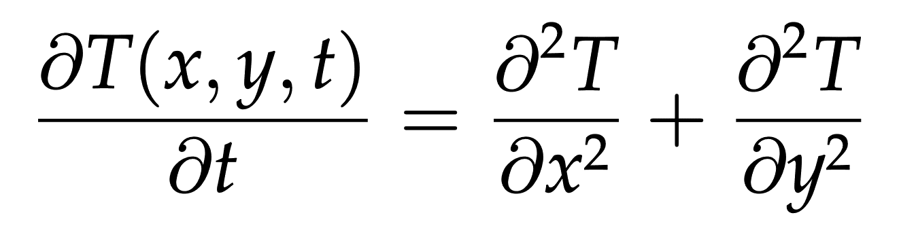
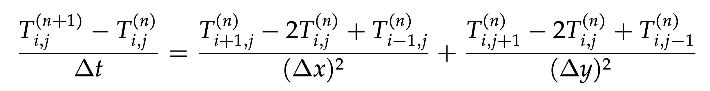
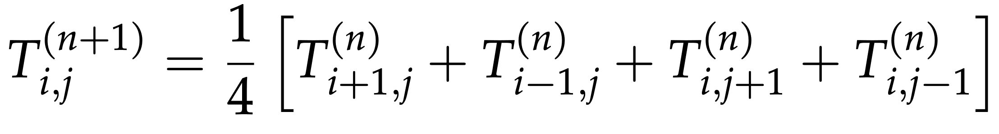

Heat transfer solver on distributed domains
Case study 2: solving the Heat transfer problem
For a tightly coupled parallel calculation, consider a heat diffusion problem:
- we have a square metallic plate initially at 25 degrees (initial condition)
- we want to simulate the evolution of the temperature across the plate; governed by the 2D heat (diffusion) equation: 
- discretize the solution \(T(x,y,t)\approx T^{(n)}_{i,j}\) with \(i=1,...,{\rm rows}\) and \(j=1,...,{\rm cols}\)
- the upper left corner is (1,1) and the lower right corner is (rows,cols)
- the plate’s border is in contact with a different temperature distribution (boundary condition):
- upper side \(T^{(n)}_{0,1..{\rm cols}}\equiv 0\)
- left side \(T^{(n)}_{1..{\rm rows},0}\equiv 0\)
- bottom side \(T^{(n)}_{{\rm rows}+1,1..{\rm cols}} = {80\cdot j/\rm cols}\) (linearly increasing from 0 to 80 degrees)
- right side \(T^{(n)}_{1..{\rm rows},{\rm cols}+1} = 80\cdot i/{\rm rows}\) (linearly increasing from 0 to 80 degrees)
We discretize the equation with forward Euler time stepping:

If for simplicity we assume \(\Delta x=\Delta y=1\) and \(\Delta t=1/4\), our finite difference equation becomes:

At each time iteration, at each point we’ll be computing the new temperature Tnew according to:
Tnew[i,j] = 0.25 * (T[i-1,j] + T[i+1,j] + T[i,j-1] + T[i,j+1])Tnew= new temperature computed at the current iterationT= temperature calculated at the past iteration (or the initial conditions at the first iteration)- the indices (i,j) indicate the grid point located at the i-th row and the j-th column
Here is a serial implementation of this solver baseSolver.chpl:
use Time;
config const rows, cols = 100; // number of rows and columns in our matrix
config const niter = 500; // max number of iterations
config const tolerance = 1e-4: real; // temperature difference tolerance
var count = 0: int; // the iteration counter
var delta: real; // the greatest temperature difference between Tnew and T
var tmp: real; // for temporary results
var T: [0..rows+1,0..cols+1] real;
var Tnew: [0..rows+1,0..cols+1] real;
T[1..rows,1..cols] = 25;
delta = tolerance*10; // some safe initial large value
var watch: stopwatch;
watch.start();
while (count < niter && delta >= tolerance) {
for i in 1..rows do T[i,cols+1] = 80.0*i/rows; // right side boundary condition
for j in 1..cols do T[rows+1,j] = 80.0*j/cols; // bottom side boundary condition
count += 1; // update the iteration counter
for i in 1..rows {
for j in 1..cols {
Tnew[i,j] = 0.25 * (T[i-1,j] + T[i+1,j] + T[i,j-1] + T[i,j+1]);
}
}
delta = 0;
for i in 1..rows {
for j in 1..cols {
tmp = abs(Tnew[i,j]-T[i,j]);
if tmp > delta then delta = tmp;
}
}
if count%100 == 0 then writeln("delta = ", delta);
T = Tnew;
}
watch.stop();
writeln('Largest temperature difference was ', delta);
writeln('Converged after ', count, ' iterations');
writeln('Simulation took ', watch.elapsed(), ' seconds');chpl --fast baseSolver.chpl
./baseSolver --rows=650 --cols=650 --niter=9500 --tolerance=0.002Largest temperature difference was 0.00199985
Simulation took 17.3374 secondsDistributed version
Now let us use distributed domains to write a parallel version of our original heat transfer solver code. We’ll start by copying baseSolver.chpl into parallelSolver.chpl and making the following modifications to the latter:
- Add
use BlockDist;
const mesh: domain(2) = {1..rows, 1..cols}; // local 2D domain- Add a larger \((rows+2)\times (cols+2)\) block-distributed domain
largerMeshwith a layer of ghost points on perimeter locales, and define a temperature array T on top of it, by adding the following to our code:
const largerMesh: domain(2) dmapped new blockDist(boundingBox=mesh) = {0..rows+1, 0..cols+1};- Change the definitions of T and Tnew (delete those two lines) to
var T, Tnew: [largerMesh] real; // block-distributed arrays of temperaturesMove the linearly increasing boundary conditions (right/bottom sides) before the
whileloop.Replace the loop for computing inner
Tnew:
for i in 1..rows { // do smth for row i
for j in 1..cols { // do smth for row i and column j
Tnew[i,j] = 0.25 * (T[i-1,j] + T[i+1,j] + T[i,j-1] + T[i,j+1]);
}
}with a parallel forall loop (contains a mistake on purpose!):
forall (i,j) in mesh do
Tnew[i,j] = 0.25 * (T[i-1,j] + T[i+1,j] + T[i,j-1] + T[i,j+1]);Can anyone spot a mistake in this loop?
- Replace
delta = 0;
for i in 1..rows {
for j in 1..cols {
tmp = abs(Tnew[i,j]-T[i,j]);
if tmp > delta then delta = tmp;
}
}with
delta = max reduce abs(Tnew[1..rows,1..cols]-T[1..rows,1..cols]);- Replace
T = Tnew;with the inner-only update
T[1..rows,1..cols] = Tnew[1..rows,1..cols]; // uses parallel `forall` underneathBenchmarking
Let’s compile both serial and data-parallel versions using the same multi-locale compiler (and we will need -nl flag when running both):
$ source /project/def-sponsor00/shared/syncHPC/startMultiLocale.sh
$ chpl --fast baseSolver.chpl -o baseSolver
$ chpl --fast parallelSolver.chpl -o parallelSolverFirst, let’s try this on a smaller problem. Let’s write a job submission script distributed.sh:
#!/bin/bash
# this is distributed.sh
#SBATCH --time=0:15:0 # walltime in d-hh:mm or hh:mm:ss format
#SBATCH --nodes=1
#SBATCH --cpus-per-task=1
#SBATCH --mem-per-cpu=3600 # in MB
#SBATCH --output=solution.out
echo Running on $SLURM_NNODES nodes
./baseSolver --rows=30 --cols=30 --niter=2000 -nl $SLURM_NNODES
# ./parallelSolver --rows=30 --cols=30 --niter=2000 -nl $SLURM_NNODESLet’s run both codes, (un)commenting the relevant lines in distributed.sh:
$ sbatch distributed.shLargest temperature difference was 9.9534e-05
Converged after 1148 iterations
Simulation took ... secondsWait for the jobs to finish and then check the results:
| --nodes | 1 | 4 |
| --cpus-per-task | 1 | 2 |
| baseSolver (sec) | 0.00725 | |
| parallelSolver (sec) | 67.5 |
As you can see, on the training cluster the parallel code on 4 nodes (with 2 cores each) ran ~9,300 times slower than a serial code on a single node … What is going on here!? Shouldn’t the parallel code run ~8X faster, since we have 8X as many processors?
This is a fine-grained parallel code that needs a lot of communication between tasks, and relatively little computing. So, we are seeing the communication overhead. The training cluster has a very slow interconnect, so the problem is even worse there than on a production cluster!
If we increase our 2D problem size, there will be more computation (scaling as \(O(n^2)\)) in between communications (scaling as \(O(n)\)), and at some point the parallel code should catch up to the serial code and eventually run faster. Let’s try these problem sizes:
--rows=650 --cols=650 --niter=9500 --tolerance=0.002
Largest temperature difference was 0.0019989
Converged after 7766 iterations
--rows=2000 --cols=2000 --niter=9500 --tolerance=0.002
Largest temperature difference was 0.0019989
Converged after 9158 iterations
--rows=8000 --cols=8000 --niter=9800 --tolerance=0.002
Largest temperature difference was 0.0019989
Converged after 9725 iterations
--rows=16000 --cols=16000 --niter=9900 --tolerance=0.002
Largest temperature difference was 0.0019989
Converged after 9847 iterationsOn the training cluster (slower interconnect)
I switched both codes to single precision (change real to real(32) and use (80.0*i/rows):real(32) when assigning to real(32) variables), to be able to accommodate larger arrays. The table below shows the slowdown factor when going from serial to parallel:
| 30^2 | 650^2 | 2,000^2 | 8,000^2 | 16,000^2 | |
|---|---|---|---|---|---|
| --nodes=4 --cpus-per-task=8 | 5104 | 14.78 | 2.29 | 1/1.95 | 1/3.31 |
Final parallel code
Here is the final single-precision parallel version of the code, minus the comments:
use Time, BlockDist;
config const rows, cols = 100;
config const niter = 500;
config const tolerance = 1e-4: real(32);
var count = 0: int;
var delta: real(32);
var tmp: real(32);
const mesh: domain(2) = {1..rows, 1..cols};
const largerMesh: domain(2) dmapped new blockDist(boundingBox=mesh) = {0..rows+1, 0..cols+1};
var T, Tnew: [largerMesh] real(32);
T[1..rows,1..cols] = 25;
delta = tolerance*10;
var watch: stopwatch;
watch.start();
for i in 1..rows do T[i,cols+1] = (80.0*i/rows):real(32); // right side boundary condition
for j in 1..cols do T[rows+1,j] = (80.0*j/cols):real(32); // bottom side boundary condition
while (count < niter && delta >= tolerance) {
count += 1;
forall (i,j) in largerMesh[1..rows,1..cols] do
Tnew[i,j] = 0.25 * (T[i-1,j] + T[i+1,j] + T[i,j-1] + T[i,j+1]);
delta = max reduce abs(Tnew[1..rows,1..cols]-T[1..rows,1..cols]);
if count%100 == 0 then writeln("delta = ", delta);
T[1..rows,1..cols] = Tnew[1..rows,1..cols]; // uses parallel `forall` underneath
}
watch.stop();
writeln('Largest temperature difference was ', delta);
writeln('Converged after ', count, ' iterations');
writeln('Simulation took ', watch.elapsed(), ' seconds');This is the entire multi-locale, data-parallel, hybrid shared-/distributed-memory solver!